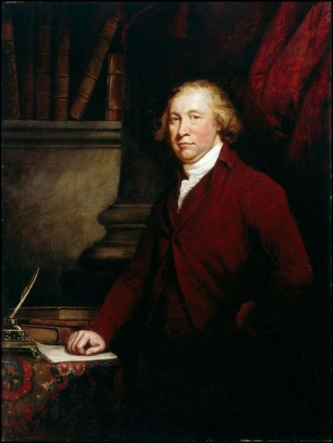
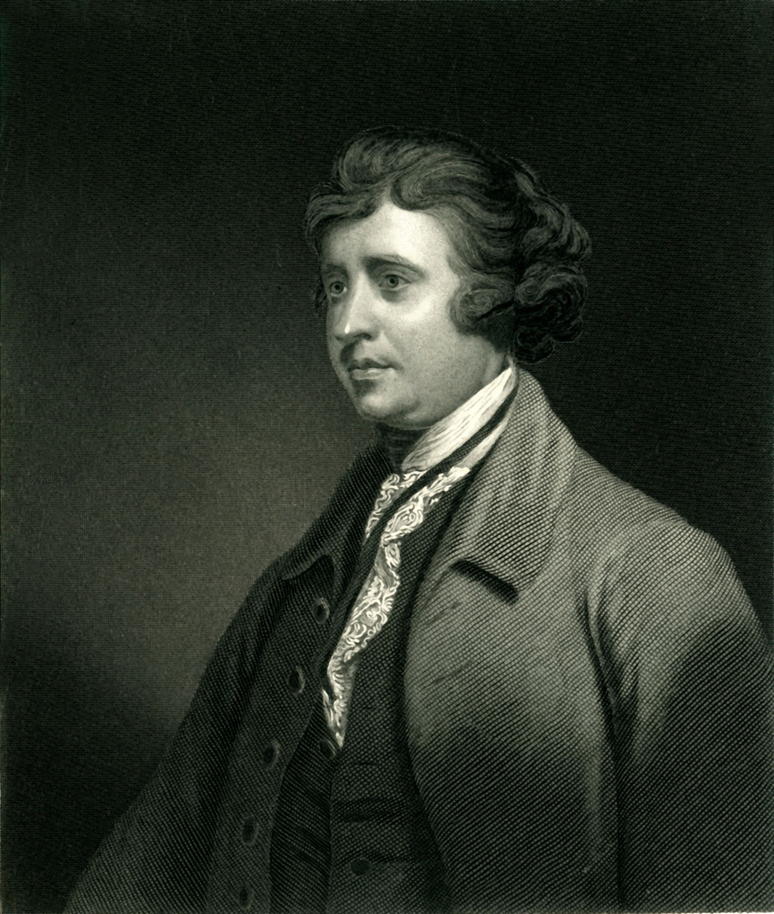
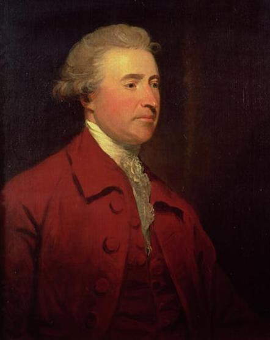
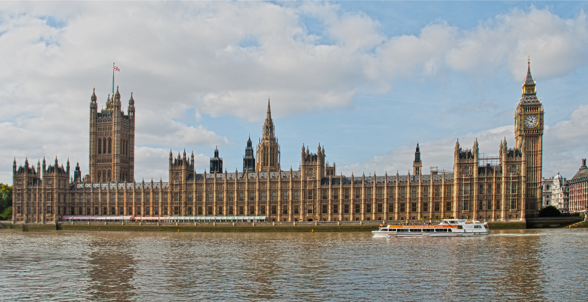
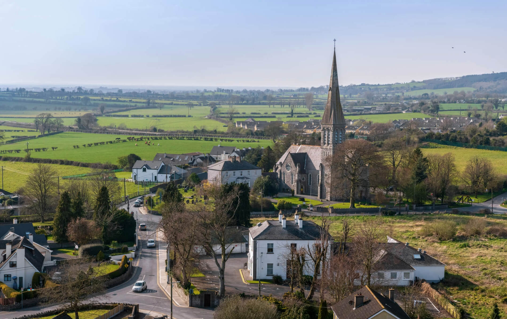
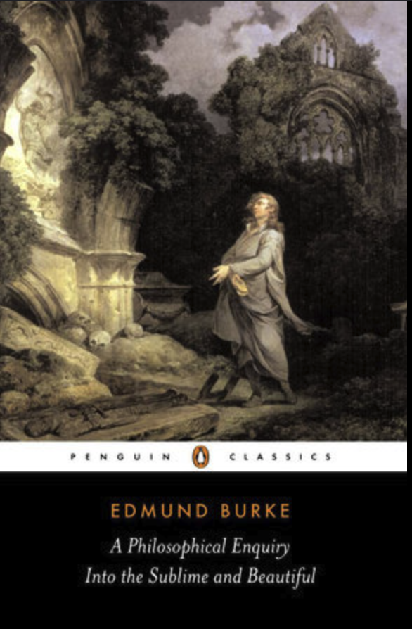
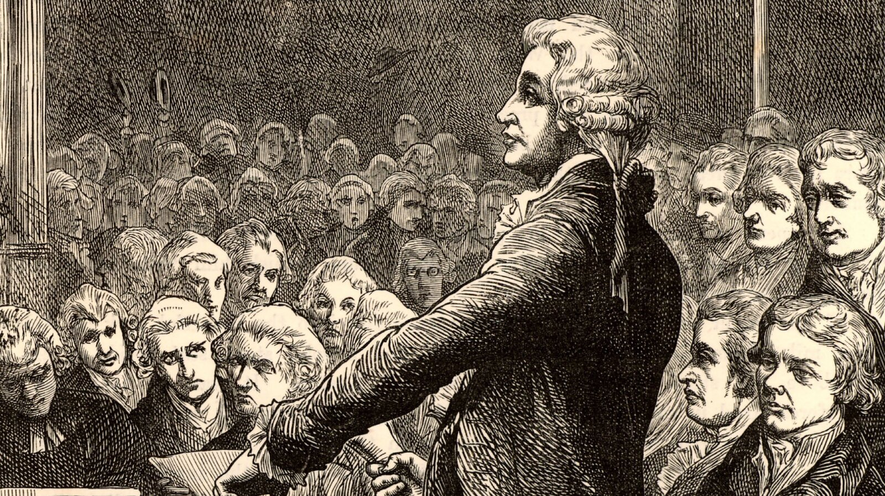

“But what is liberty without wisdom, and without virtue? It is the greatest of all possible evils; for it is folly, vice, and madness”



Biography
Edmund Burke was born in Dublin, Ireland, in 1729, to a Catholic mother and a Protestant father. Burke practiced his father's Anglican faith throughout his life. He spent part of his childhood in County Cork, Ireland, and was educated in County Kildare at a Quaker school before attending Trinity College Dublin for college. After graduating in 1748, Burke moved to London to train in the Law. He soon quit, however, and began a writing career. Burke married Jane Mary Nugent in 1757, and the two would go on to have two sons, Christopher and Richard. Christopher died at age 5, and Richard at 36. Burke later entered Parliament, and continued writing during the period of the American Revolution. His political career is covered elsewhere, but he would most famously criticize the French Revolution during his tenure, and also opposed the slave trade. He died after struggling with what is believed to be stomach cancer in Buckinghamshire, England, in 1797.
Trinity College Dublin

London Parliament

County Kildare
Books
While much of Burke's politiacl thought comes to us through speeches and letters, he penned these two books expressing his political views and philosophical thought. The most famous of these is "Reflections on the Revolution in France," which Thomas Paine would respond to publically.
“It is ordained in the eternal constitution of things, that men of intemperate minds cannot be free. Their passions forge their fetters.” - Reflections
“People will not look forward to posterity who never look backward to their ancestors.” - Reflections
“The human mind is often, and I think it is for the most part, in a state neither of pain nor pleasure, which I call a state of indifference.” - Sublime and Beautiful


Political Career

Burke began his career in parliament in 1765, where he would serve for 35 years as an MP
for Wendover, Bristol, and lastly Malton.
During his career, Burke was known for his sympathy towards the American colonists,
advocating for compromise rather than repression.
He also led impeachment proceedings against Warren Hastings, the governor general of India,
for corruption in relation to the British East India Company.
Perhaps most famously, Burke strenuously opposed the French Revolution, which he considered an imprudent,
destructive, and barbaric overreaction.
Political Thought

Much of Burke's political thought can be learned through his reaction to the French Reovlution.
In his response, Burke emphasizes the importance of respecting the inherited traditions of the country,
treating its constitution as a possession of the the past, present, and future political body.
One generation should not change the constitution, which includes written laws and unwritten customs without a very good reason while exercising the virtue of prudence. Burke's thought is thus a conservative one, in the sense that it emphasizes the importance of tradition and prudence in political decision making.
Burke's thought resembles Chesterton's fence: before you remove a fence, you should learn why it's there in the first place. This is why the French Revolution was so wrong to Burke. With no respect
for their inherited tradition, the framers of the revolution cast aside their constitution and destroyed
their country.
For Burke, we are indebted to our ancestors, and we owe it to the next generations to pass along their collective and hard-earned wisdom. We should not be so arrogant as to think that we can improve on the work of our ancestors without a very good reason, and we should be humble enough to recognize that we may not have such a reason.